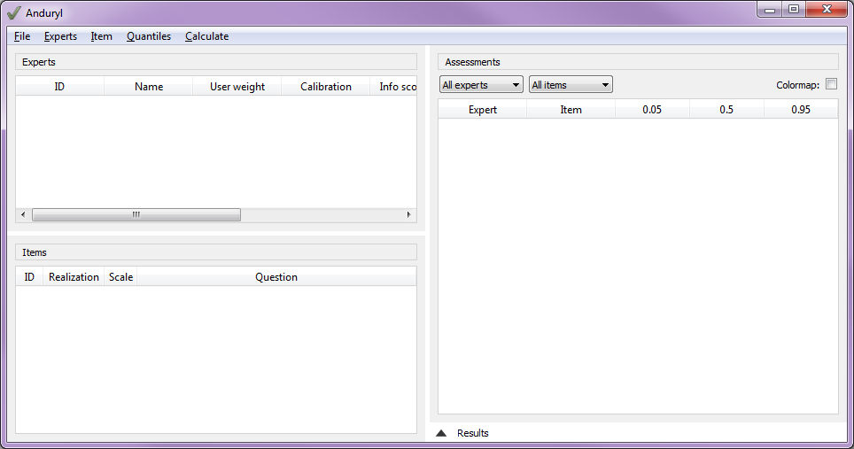
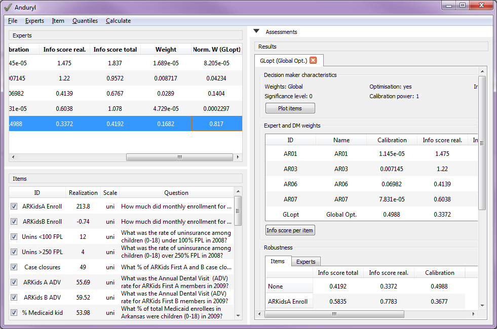

Quick start¶
The following guide gives a global overview of the functionalities Anduryl has.
Jump to:
- New project, loading and saving
Start Anduryl by double-clicking Anduryl.exe. There are several options for opening of saving a project:
New project: When starting Anduryl, a new project is opened. By chooding the “New” option in the “File” menu, the current project can be replaced by a new project
Load project: In the “File” menu an existing project can be loaded with the “Open” option. Projects in JSON format and Excalibur format can be loaded. When an Excalibur file format is loaded, the accompanying (.rls) file is searched by replacing the extension. A project can also be loaded by dragging and dropping the corresponding in the Anduryl window.
Save project as: The current project can be saved in JSON (.json) and Excalibur format (.dtt and .rls). Note that the Excalibur format puts some restrictions on the length of the ID’s. 8 characters for expert ID’s, 14 for item ID’s.
Save project: When a project is already opened, in can be saved without giving a filename, by clicking with the Save option in the menu.
- Edit a project
The following image shows the Anduryl main screen. From top left clockwise: the expert overview, the assessment overview, the result overview (will be opened after the first calculation) and the item overview.
A number of actions can be done to configure a project:
Edit quantiles: Quantiles can be added or removed by clicking the “Quantiles” button in the menu.
Edit experts: adding or removing experts can be done by right-clicking in the expert overview, and choose “Add expert”. From this context menu also experts can be removed or excluded. Adding or removing experts can also be done from the “Experts” menu. For experts the ID and name can be changed into something recognizable. Also the user weights can be edited for a “User weights” calculation.
Edit items: adding or removing items can be done by right-clicking in the items overview, and choose “Add item”. From this context menu also items can be removed or excluded. Adding or removing items can also be done from the “Items” menu. When a number is assigned to the realization, the question is considered a seed question (since the answer is known). Without a realization, it is considered a target question. The ID and Question can be edited.
Edit assessments: Assessments are automatically added to the overview or updated, when experts or items are added. The assessment values can be edited in the overview. The comboboxes above the table allow selecting a specific question or expert, which is convenient for focusing on some results. The assessments can be colored by checking the ‘colormap’ checkbox. This will color the values lower than the realization red, and higher than the realization blue. For target questions there are no realizations, so the coloring is done relative to the median answer for the item.
- Calculate
To calculate a decision maker, click the “Calculate” button in the menu. This will open the following window, with which the options can be configured.
The user can choose from four weight types: global, item, equal and user. For the user options the user weights should be assigned in the expert overview.
Experts or items can be excluded from the calculation by unchecking the checkbox in front of the expert of item ID in the expert of item overview.
The ID and Name or changed according to the weight and optimization. The ID and names however can be changed by the user. Note that the ID should be unique.

By pressing “Calculate”, the decision maker is calculated and added to the experts. The results are added to the project.
- Results
After adding results, the main window might look like this:
The decision maker is added to the expert overview, including its normalized weight. The results are added to the results tab (note that the assessments overview is minimized in the figure above).
Note that the results are ‘frozen’ after a DM calculation. So when the experts, items or assessments are changed after a calculation, the previously generated results will not change accordingly.
The results option has a number of components and additional options:
At the top, the DM characteristics are summarized.
The Plot Items button gives the following dialog, in which the expert and DM densities can be visualized:

Below is the expert overview including the just calculated decision maker.
With the info score per item button, the information score per item is shown in a pop-up table. These scores can be colored by clicking the ‘colormap’ checkbox. The red values have a low information score, the green values a high. Especially for the item weights this option can be relevant.
For global and item weights, the robustness tables are directly calculated for excluded each expert and item. If there are not enough items and experts to calculate robustness, it is skipped.
At the bottom the Plot multiple excluded items button gives the option to calculate the calibration and information score of the DM, when even more items or experts are excluded. The results are shown in a boxplot: